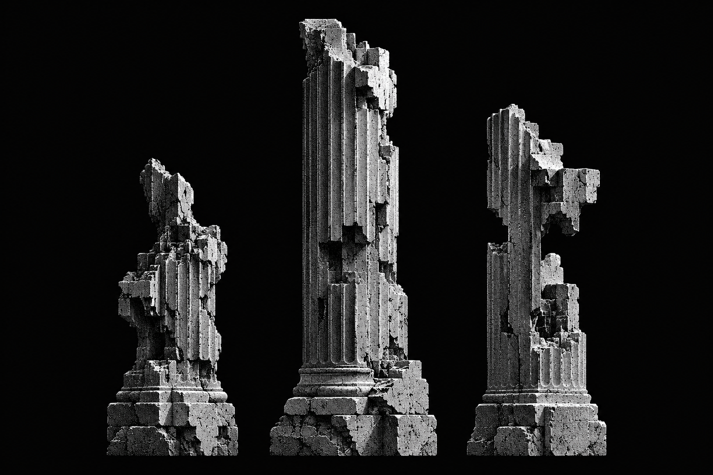

Здесь появится основной сценарий после получения технического задания.
Преломление света на архитектурной подложке.
Текст остаётся чётким. Оптический слой преломляет только изображение под панелью.